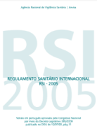

Proteção da Saúde e Vigilância Sanitária
A complexa função de proteção da saúde desempenhada pela vigilância sanitária é atribuição constitucional. Essa função de proteção é exercida mediante o poder regulatório do Estado, assegurado pelo exercício do poder de polícia administrativa sanitária que permite à vigilância sanitária regulamentar, disciplinar, autorizar atividades e tecnologias, fiscalizar e atribuir penalidades.
A proteção da saúde está na Constituição Federal de 1988, nos Artigos 196 a 200 e no Artigo 24, inciso VI. Ela é uma obrigação do Estado, devendo ser concretizada por políticas públicas voltadas para a defesa da vida, do ambiente, da Saúde Pública e, também, por normas administrativas, por dentre outros, da Vigilância Sanitária, Vigilância Epidemiológica e da Saúde do Trabalhador. As ações da vigilância sanitária se modificam continuamente, conforme as mudanças dos modelos econômicos e com o desenvolvimento tecnológico e social.
Veja os principais marcos que compõem a história e a memória da VISA no Brasil, até a criação da Anvisa.
Fonte: A história e a memória da VISA no Brasil - ENSP/Fiocruz - Leia a síntese introdutória dos slides aqui
Para PENSAR
Você percebeu que, ao longo do tempo, houve modificações na atuação da VISA e a associação das mudanças ao desenvolvimento econômico e tecnológico?
Quais os desafios para atuação da VISA, neste mundo globalizado, onde a produção é desterritorializada e predominam cada vez mais grandes corporações na área da saúde?
• Definindo a Vigilância Sanitária
A vigilância sanitária é uma política regulatória, definida, no artigo 6o, parágrafo 1o, da Lei no 8080, de 19 de setembro de 1990, como:
“…um conjunto de ações capaz de eliminar, diminuir ou prevenir riscos à saúde e de intervir nos problemas sanitários decorrentes do meio ambiente, da produção e circulação de bens e da prestação de serviços de interesse da saúde, abrangendo:
I - o controle de bens de consumo que, direta ou indiretamente, se relacionem com a saúde, compreendidas todas as etapas e processos, da produção ao consumo; e
II - o controle da prestação de serviços que se relacionam direta ou indiretamente com a saúde…”.
De acordo com a Organização para a Cooperação e Desenvolvimento Econômico (OCDE), o objetivo de uma política dessa natureza é certificar que a regulação é de interesse público e coopera na definição da relação entre Estado, cidadão e interesse econômico. A regulação da VISA é, portanto, um modo de intervenção do Estado nos interesses individuais, visando a proteção da saúde da coletividade. Com isso, evitam-se danos, agravos ou riscos à saúde da população, proporcionando maior segurança e estabelecendo relações éticas entre a produção e o consumo de bens e serviços. Quando bem realizada, essa política contribui para o exercício da cidadania.
Além disso, a VISA engloba toda a parte de análise do risco bem como as respostas que o Estado empreende para gerenciar os riscos considerados importantes para a saúde, ou seja, as regulamentações, as políticas de gerenciamento do risco e as intervenções que a vigilância sanitária realiza em sua atuação cotidiana.
Riscos e gerenciamento de riscos
O risco é um conceito polissêmico e muito discutido na Saúde Coletiva. A gestão do risco inclui:
-
Identificação e análise - que são baseados no conhecimento científico
-
Gerenciamento - que tem natureza político-administrativa
-
Comunicação - que é troca interativa de informação sobre riscos
O gerenciamento é a abordagem tradicional da avaliação de risco e tem, na área da saúde, como principais referências a toxicologia e a epidemiologia. Freitas, em seu artigo Riscos e Processos Decisórios - implicações para a vigilância sanitária, chama atenção para o fato de que a abordagem tradicional pode reduzir o risco a uma única dimensão (biológica) e desconsiderar aspectos fundamentais dos fenômenos estudados. Com isso, há perdas importantes na compreensão dos problemas, na formulação de estratégias de prevenção e no controle dos riscos.
É importante que os resultados da avaliação de risco estejam integrados às preocupações sociais, econômicas e políticas na seleção de políticas de regulação mais apropriadas.
A regulação do risco, de acordo com Porto, no livro Uma Ecologia Política dos Riscos: princípios para integrarmos o local e o global na promoção da saúde e da justiça ambiental, é o processo decisório que define quais riscos são aceitáveis e quais (e como) podem ser mitigados.
A necessidade de se regular bens e serviços de interesse da saúde e a cooperação internacional na regulação sanitária, entre os países e suas autoridades sanitárias, têm ganhado importância mundial.
A globalização econômica vem acompanhada de fragmentação na produção, que exige a realização de ações de controle sanitário fora do território nacional. Internacionalmente, tem se produzido muitas regulamentações e instrumentos para regular as tecnologias, de forma a reduzir a ameaça à saúde.
Há, portanto, um importante arsenal e alicerce da ciência da regulamentação moderna, compartilhado com órgãos internacionais, Organização Mundial da Saúde, organizações multilaterais e autoridades reguladoras de outros países e blocos econômicos. Contudo, esse arsenal nem sempre tem caráter favorável aos países que não fazem parte do centro do capitalismo.
Especial atenção tem sido dada ao monitoramento do uso das tecnologias em saúde, de forma a garantir a segurança. A regulação dessas tecnologias não é apenas indiscutível na maioria dos países, como também uma tarefa inalienável do Estado.
No Brasil, a Vigilância Sanitária possui o poder administrativo de polícia, que lhe outorga atuar na regulação dos bens de interesse da saúde.
Poder de polícia da Vigilância Sanitária
O poder de polícia é o mecanismo de frenagem de que dispõe a Administração Pública para conter os abusos do direito individual. O poder de polícia da vigilância sanitária é do tipo administrativo - poder de polícia administrativa sanitária -, e não do tipo judiciário. Por meio dele, é possível restringir o funcionamento total ou parcial de um estabelecimento, retirar concessões de registro, autorização ou licença de funcionamento, entre outros. O poder de polícia tem como fundamento a supremacia do interesse público.
A regulação e a utilização do poder de polícia se justificam na área da vigilância sanitária por ser ela o fiel da balança entre interesses econômicos e sanitários e aquela que busca equilibrar as falhas existentes no mercado de bens e serviços de interesse da saúde. Neste mercado da saúde, não há racionalidade no consumo de bens e serviços de saúde; existe a possibilidade de ocorrência de eventos adversos, que podem comprometer a saúde do indivíduo; não há possibilidade de escolha, pelo cidadão, entre as opções disponíveis, sendo a decisão do uso de bens e serviços intermediada por profissionais de saúde e há oligopólios de empresas, que pressionam pelo consumo de suas tecnologias e estabelecem o preço sem presença de competição.
PARA SABER MAIS:
Se você quiser saber mais sobre os poderes da Administração Pública, especialmente do poder de polícia e a vigilância sanitária, consulte o texto:
• Dimensão avaliativa da VISA
Interessa à VISA, especialmente, avaliar a qualidade dos bens e serviços de interesse da saúde. Dessa forma, a vigilância sanitária tem uma importante dimensão avaliativa.
Diante de informações científicas, a vigilância sanitária avalia, por exemplo, a relação existente entre os benefícios e os riscos para aprovar, ou não, a concessão de registro de um novo medicamento ou indicação terapêutica, avaliar a concessão de licença ou autorização de funcionamento de serviços de interesse da saúde, como serviços de saúde, estabelecimentos de comercialização de bens de saúde ou indústrias produtoras - considerado o contexto em que o novo medicamento será utilizado.
A vigilância sanitária avalia as tecnologias em saúde considerando todas as etapas do seu ciclo de vida, desde o desenvolvimento até a sua utilização. Avalia, também, os serviços de interesse da saúde, desde a sua estrutura até a prestação de serviços.
Alguns conceitos são muito importantes para este processo de avaliação e destacam-se:
Efetividade
Segurança
Eventos adversos
A avaliação não tem como foco apenas características específicas de tecnologias ou de prestação de serviços, mas também as Boas Práticas, que são normatizadas pela Vigilância Sanitária.
Boas Práticas
As Boas Práticas são componentes importantes da garantia de qualidade e buscam permitir que a análise dos riscos funcione de modo eficaz, fornecendo as condições operacionais e ambientais básicas para a obtenção de um resultado final de qualidade.
As Boas Práticas se referem a todas as etapas do ciclo de vida das tecnologias em saúde e para o funcionamento dos serviços de interesse da saúde.
Assim, há várias normas da Vigilância Sanitária estabelecendo, por exemplo, Boas Práticas de Fabricação, Boas Práticas de Manipulação, Boas Práticas de Armazenamento e Boas Práticas de Comercialização.
As normas sanitárias são elementos importantes da regulação e, para os autores Silva e Pepe, significam o reconhecimento da existência do risco e da necessidade do seu controle. As normas também sintetizam o conhecimento técnico-científico acumulado até o momento de sua elaboração e expressam as medidas preventivas, considerando as características intrínsecas das tecnologias e serviços, do seu processo de produção e condições de trabalho. Assim, com a produção de novos conhecimentos sobre os riscos, as normas podem mudar.
Cabe à Vigilância Sanitária, o monitoramento do cumprimento das suas normas, seja por meio de sistemas de informação, de exigências de retorno de informação do setor produtivo e da sociedade e de fiscalizações efetuadas pelo Sistema Nacional de Vigilância Sanitária.
A atuação da Vigilância depende de equipe multidisciplinar, pois os riscos a serem identificados e avaliados são de diversas naturezas (biológicos, físicos, radiológicos, etc.). Além disso, o seu gerenciamento exige também a ajuda de outras áreas do conhecimento como, por exemplo, Direito, Sociologia e Antropologia.
• Interdisciplinaridade
Tendo em vista o impacto que a atuação das autoridades reguladoras representa na Saúde Coletiva, é importante que elas sejam independentes do setor regulado e do governo, sejam transparentes e façam a prestação de contas à sociedade.
No Brasil, a Vigilância Sanitária constitui uma prática importante do Sistema Único de Saúde e se articula com as demais práticas de prevenção e proteção, como a Promoção da Saúde, a Vigilância Epidemiológica, a Vigilância em Saúde do Trabalhador e a Vigilância Ambiental. Articula-se, também, com outras áreas do SUS como a atenção à saúde, a auditoria e a ouvidoria.
Recentemente, o Conselho Nacional de Saúde, pela Resolução no 588, de 12 de julho de 2018, instituiu a Política Nacional de Vigilância em Saúde, que em seu artigo 3º, considera “(…) articulação dos saberes, processos e práticas relacionados à vigilância epidemiológica, vigilância em saúde ambiental, vigilância em saúde do trabalhador e vigilância sanitária e alinha-se com o conjunto de políticas de saúde no âmbito do SUS, considerando a transversalidade das ações de vigilância em saúde sobre a determinação do processo saúde-doença (…)”.
Campo e abrangência de atuação da Vigilância Sanitária
A Constituição Federal, em seu artigo 200, aponta claramente que as ações de vigilância sanitária fazem parte da competência do SUS e a Lei Orgânica da Saúde traz a definição dessa área, conforme apresentado anteriormente. Há um conjunto de ações que precisa ser desempenhado, portanto, pelas três esferas do Sistema Único de Saúde, por meio dos serviços/órgãos responsáveis pela vigilância sanitária no âmbito federal, estadual, municipal e distrital.
Na própria Constituição, há menção explícita a algumas das atribuições da vigilância sanitária, como: controlar e fiscalizar procedimentos, produtos e substâncias de interesse para a saúde; fiscalizar e inspecionar alimentos, inclusive quanto ao controle de seu teor nutricional, assim como bebidas e águas para consumo humano; participar do controle e fiscalização da produção, transporte, guarda e utilização de substâncias e produtos psicoativos, tóxicos e radioativos; e, colaborar na proteção do meio ambiente, inclusive o ambiente de trabalho.
Mencionamos anteriormente que a vigilância sanitária tem como objetos de atuação produtos e serviços que interferem na saúde. Vamos apresentá-los brevemente.
• Produtos relacionados à saúde e sujeitos à vigilância sanitária
De acordo com a Lei nº 9.782, de 26 de janeiro de 1999, que define o Sistema Nacional de Vigilância Sanitária, cria a Agência Nacional de Vigilância Sanitária, e dá outras providências, os produtos relacionados à saúde e sujeitos à vigilância sanitária são de diferentes naturezas. Conheça alguns deles:
Bens e produtos sob controle da vigilância sanitária
- Medicamentos de uso humano, suas substâncias ativas e demais insumos, processos e tecnologias.
- Alimentos, inclusive bebidas, águas envasadas, seus insumos, suas embalagens, aditivos alimentares, limites de contaminantes orgânicos, resíduos de agrotóxicos e de medicamentos veterinários.
- Cosméticos, produtos de higiene pessoal e perfumes.
- Saneantes destinados à higienização, desinfecção ou desinfestação em ambientes domiciliares, hospitalares e coletivos.
- Conjuntos, reagentes e insumos destinados a diagnóstico.
- Equipamentos e materiais médico hospitalares, odontológicos e hemoterápicos e de diagnóstico laboratorial e por imagem.
- Imunobiológicos e suas substâncias ativas, sangue e hemoderivados.
- Órgãos, tecidos humanos e veterinários para uso em transplantes ou reconstituições.
- Radioisótopos para uso diagnóstico in vivo e radiofármacos e produtos radioativos utilizados em diagnóstico e terapia.
- Cigarros, cigarrilhas, charutos e qualquer outro produto fumígeno, derivado ou não do tabaco.
- Outros produtos que envolvam a possibilidade de risco à saúde, obtidos por engenharia genética, por outro procedimento ou ainda submetidos a fontes de radiação.
A diversidade desses produtos é cada dia maior, por conta do desenvolvimento científico e tecnológico. Entre os produtos relacionados à saúde, os medicamentos e insumos farmacêuticos ocupam um lugar de destaque.
Cada produto tem um tipo de monitoramento:
Medicamentos: farmacovigilância
Sangue, hemoderivados e hemocomponentes: hemovigilância
Equipamentos médicos: tecnovigilância
Cosméticos: cosmetovigilância
Medicamentos
A VISA regula todo o ciclo de vida dos medicamentos: do desenvolvimento e pesquisas clínicas, produção, registro, distribuição, comercialização, prescrição e uso, até o monitoramento dos efeitos do uso, especialmente, os eventos adversos. A intenção é ter um perfil de risco mais consistente, captando os eventos adversos e outros problemas para informar às medidas regulatórias.
Entre as medidas regulatórias possíveis estão:
-
Recolhimento de lotes
-
Concessão e cancelamento de registro
-
Revisão de registros
-
Adequação de bulas para orientação de uso
-
Mudanças de rótulos e embalagens
-
Elaboração de alertas sanitários, para profissionais de saúde e população
Alimentos
A vigilância sanitária também exerce controle sobre alimentos, bebidas e águas envasadas e suas embalagens. Em relação aos alimentos, a VISA atua sobre toda a cadeia da indústria. As normas de Boas Práticas desse segmento são editadas pela Anvisa e atualizadas periodicamente.
Cadeia de produção da indústria
A VISA tem uma atuação mais ampla no comércio de alimentos, que inclui restaurantes, cozinhas industriais, supermercados, lanchonetes e outros pontos de comercialização.
Quanto às indústrias, a VISA inspeciona algumas, pois é uma competência dividida com o Ministério da Agricultura e Pecuária (Mapa), responsável pela defesa agropecuária. O Ministério inspeciona as indústrias de produtos de origem animal e as de medicamentos veterinários, inspeciona e fiscaliza a produção de sementes, mudas e outros produtos. Também é responsável pelo registro, a classificação e a fiscalização do comércio de bebidas e da produção de uvas, vinhos e derivados.
Algumas categorias de alimentos também são registradas, como: novos alimentos e novos ingredientes, alimentos com alegações de propriedades funcionais e/ou de saúde, alimentos infantis, fórmulas para nutrição enteral, embalagens com novas tecnologias e suplementos alimentares contendo enzimas ou probióticos (RDC nº 27/2010).
Como o Brasil é membro do Codex Alimentarius, que estabelece regras relacionadas à segurança alimentar, as normas devem estar em harmonia com as de outros países, de modo a facilitar o comércio internacional, sem perder a perspectiva da segurança e proteção da saúde dos consumidores.
PARA SABER MAIS:
O Codex Alimentarius foi criado na década de 1960, de maneira conjunta, pela Food and Agriculture Organization (FAO) e pela Organização Mundial da Saúde (OMS) com o propósito de harmonizar as normas alimentares entre os países e contribuir para o comércio internacional. Se você tiver interesse em conhecer mais sobre isso, acesse o Codex Alimentarius aqui.
Fonte: Página do Codex Alimentarius
Quando ocorrem surtos relacionados ao consumo de alimentos, a vigilância sanitária, a vigilância epidemiológica e o Laboratório de Saúde Pública (Lacen) trabalham juntos para sua investigação, isso traz agilidade para a adoção das medidas de controle, para além daquelas de cunho regulatório e fiscalizatório.
Agrotóxicos e fumígenos
Dentro da competência da vigilância sanitária, merecem atenção especial produtos que sabidamente são perigosos para a saúde, como os agrotóxicos, cigarros e outros produtos fumígenos, derivados ou não do tabaco.
Quanto aos agrotóxicos e seus componentes, cabe à Anvisa uma participação no processo de registro, que é realizado pelo Ministério da Agricultura e Pecuária (Mapa).
No Brasil, essa tem sido uma arena de muitos conflitos. Por exemplo, pesquisadores e profissionais das áreas da saúde, meio ambiente e saúde do trabalhador fazem alertas e dossiês mostrando o risco e o uso cada vez maior de agrotóxicos pelo agronegócio.
PARA SABER MAIS:
Dossiê Abrasco: um alerta sobre os impactos dos agrotóxicos na saúde
Fonte: Abrasco
Para saber mais sobre a situação dos agrotóxicos no Brasil consulte o dossiê da Associação Brasileira de Saúde Coletiva (Abrasco). [Download PDF - 18,6 MB]
• Serviços de saúde sujeitos à vigilância sanitária
Todos os serviços de saúde são de responsabilidade da vigilância sanitária, seja de atenção ambulatorial, de rotina ou de emergência, de internação, de apoio diagnóstico ou terapêutico. São alguns dos serviços sob controle da VISA:
-
Bancos de leite humano, de tecidos e órgãos
-
Laboratórios de genética
-
Patologia e análises clínicas
-
Serviços de diagnóstico por imagens
-
Serviços de quimioterapia
Esses serviços devem ter uma licença sanitária ou alvará de funcionamento da saúde que autorize seu funcionamento. Essa licença (ou alvará) é o documento emitido pela autoridade sanitária competente após análise de documentação e inspeção sanitária para verificação do cumprimento das normas pertinentes.
Atualmente, em vários estados e municípios, essas licenças têm sido emitidas a partir de documentos preenchidos pelos requerentes por meio eletrônico, fornecendo informações necessárias e se responsabilizando por sua veracidade. Essa prática foi adotada como medida de desburocratização e agilidade para iniciar uma atividade econômica. No entanto, deve-se ter em conta os riscos de cada tipo de serviço de saúde para ponderar quais os que podem prescindir de uma inspeção prévia, antes do início de seu funcionamento.
PARA SABER MAIS:
Regulamentações da Anvisa
Para os serviços de saúde há um conjunto expressivo de normas que orientam sobre todo o escopo desses serviços, disciplinando aspectos da estrutura e do processo de trabalho. Algumas são normas de caráter mais geral e abrangem quase todos os tipos de estabelecimentos de saúde. Dois exemplos de normas são:
Fonte: ANVISA
-
Resolução da Diretoria Colegiada (RDC) nº 51, de 6 de outubro de 2011, que dispõe sobre os Requisitos de Boas Práticas de Funcionamento para os Serviços de Saúde.
-
Resolução da Diretoria Colegiada (RDC) nº 63, de 25 de novembro de 2011, que dispõe sobre os requisitos mínimos para a análise, avaliação e aprovação dos projetos físicos de estabelecimentos de saúde no Sistema Nacional de Vigilância Sanitária (SNVS) e dá outras providências.
Você pode ver outras normas e resoluções da Anvisa no documento Biblioteca de temas de serviços de saúde. Esse documento foi atualizado em 28 de julho de 2023.
Nos últimos anos, além de ações voltadas para o controle de infecções relacionadas à assistência à saúde, a Anvisa e todo o Sistema Nacional de Vigilância Sanitária (SNVS), em cooperação com o Ministério da Saúde, vêm trabalhando para incentivar a adesão às ações voltadas para promover a segurança do paciente.
• Serviços de interesse à saúde
Além dos serviços de saúde, cabe também à VISA o controle dos serviços de interesse da saúde. Eles são aqueles oferecidos por profissionais que não necessariamente integram a área da saúde, mas que podem expor a população a riscos e provocar danos.
Alguns desses serviços se caracterizam por aglomeração de indivíduos, o que pode facilitar a transmissão de doenças ou onde pode haver a transmissão de doenças pela natureza de suas atividades e/ou que podem causar danos aos usuários. São exemplos de serviços de interesse à saúde:
-
Creches
-
Escolas
-
Abrigos e presídios
-
Salões de beleza, manicures, podólogos
-
Estúdios de tatuagem e piercing
-
Clínicas de estética e de massagem
-
Academias
-
Saunas
-
Piscinas
-
Hotéis
-
Funerárias e cemitérios
-
Lavanderias
-
Serviços de desinsetização
-
Empresas de esterilização de produtos de interesse da saúde
-
Empresas de fornecimento de alimentação
• As ações da Vigilância Sanitária
A face mais conhecida da VISA é a fiscalização sanitária. De acordo com Resolução da Diretoria Colegiada da Anvisa, nº 207 de 3 de janeiro de 2018, a fiscalização sanitária envolve:
“ … conjunto de ações para verificação do cumprimento das normas sanitárias de proteção da saúde e gerenciamento do risco sanitário, exercido mediante o poder de polícia administrativo na cadeia de produção, transporte, armazenamento, importação, distribuição e comercialização de produtos e serviços sujeitos à vigilância sanitária;”
Por isso o caráter dito muitas vezes “cartorial” de determinadas ações que necessitam ser formalizadas com registros escritos, datados com indicação do local e assinatura do responsável. O conjunto dessa documentação constitui o processo administrativo sanitário e pode ter diferentes finalidades.
A inspeção sanitária nada mais é que visita a estabelecimento e local onde se prestam serviços ou realizam procedimentos relacionados à saúde. O objetivo é a verificação in loco do cumprimento das normas, da adoção de Boas Práticas, salubridade do local, entre outros quesitos que visam garantir a segurança sanitária e a qualidade do que se produz. Ela oferece subsídios para:
-
licenciar estabelecimentos
-
orientar adequações
-
identificar fontes de risco e fatores que podem provocar danos
-
esclarecer ocorrências inusitadas
-
proceder a interdição de locais e recolhimento de produtos
Além de estabelecimentos onde se prestam serviços ou realizam procedimentos relacionados à saúde, a inspeção considera, também, onde se fabrica, armazena, distribui, manipula ou se comercializa algum produto de interesse da saúde.
Além da fiscalização e da inspeção, também são ações de vigilância sanitária:
-
Análise de projetos arquitetônicos e de engenharia - ação realizada por Secretarias de Estado da Saúde, Secretarias Municipais de Saúde.
-
Monitoramento do mercado - ação realizada pela Anvisa, com a atuação das Secretarias de Estado da Saúde, Secretarias Municipais de Saúde e do Laboratório Central de Saúde Pública (Lacen).
-
Capacitações técnicas - pela Anvisa, com a atuação das Secretarias de Estado da Saúde, Secretarias Municipais de Saúde.
-
Ações educativas - pela Anvisa, com a atuação das Secretarias de Estado da Saúde, Secretarias Municipais de Saúde.
-
Coleta e análise de amostras de produtos - pela Anvisa, com a atuação das Secretarias de Estado da Saúde, Secretarias Municipais de Saúde.
-
Coleta e análise de dados relativos aos serviços de saúde - pela Anvisa, com a atuação das Secretarias de Estado da Saúde, Secretarias Municipais de Saúde.
-
Monitoramento de produtos/serviços - pela Anvisa, com a atuação das Secretarias de Estado da Saúde, Secretarias Municipais de Saúde.
-
Investigação de surtos e agravos - pela Anvisa, com a atuação das Secretarias de Estado da Saúde, Secretarias Municipais de Saúde.
-
Atendimento a denúncias - pela Anvisa, com a atuação das Secretarias de Estado da Saúde, Secretarias Municipais de Saúde.
-
Monitoramento da publicidade - pela Anvisa, com a atuação das Secretarias de Estado da Saúde, Secretarias Municipais de Saúde.
Para a regulação dos riscos à saúde, é necessária a constituição de sistemas. Assim, estas ações são realizadas nas três esferas de governo, por meio do Sistema Nacional de Vigilância Sanitária.
A necessária estruturação do Sistema Nacional de Vigilância Sanitária
Conheça algumas razões pelas quais se justifica a necessidade de estruturar o sistema de vigilância sanitária.
Razão 1
Há a obrigatoriedade constitucional para que o SUS execute ações de vigilância sanitária, e esse conjunto de ações é legalmente definido como sistema pela Lei nº 9.782 de 26 de janeiro de 1999.
Razão 2
É necessária uma ação abrangente, em todo o território nacional, coordenada e cooperativa para prevenir ou minimizar os prováveis danos e agravos decorrentes da exposição aos riscos, fatores e situações de risco - ou seja, é necessário agir sistemicamente.
Razão 3
Agir sistemicamente implica em coordenação e cooperação. O arranjo sistêmico permite, de um lado, a existência de componentes interdependentes, desiguais e complementares, porém capazes de realizar certas funções. De outro lado, a possibilidade de ajustamento mediante retroalimentação, com trocas regulares de informação. Essa troca de informação é, inclusive, um potente mecanismo para a coordenação do trabalho e de estabelecimento da ação coordenada. Importante lembrar que coordenação e cooperação não significam inexistência de conflitos e até de disfunções.
Razão 4
Algumas ações de vigilância exigem elevados requerimentos técnicos e institucionais. Esses requerimentos são difíceis de serem alcançados por todos os componentes de uma federação marcada pela desigualdade, como a brasileira.
Um alto requerimento funcional e político é a exigência de várias ações típicas de Estado, incluindo as de defesa e proteção da saúde, principalmente as de fiscalização. Essas ações precisam ser executadas por agentes públicos investidos na função, profissionais concursados ou comissionados, relativamente protegidos em função do nível potencialmente alto de conflitos de interesses na sua esfera de atuação.
Os requerimentos técnicos e institucionais para o sistema nacional de vigilância sanitária são elevados também para a articulação de respostas rápidas. Se esses requerimentos tivessem que ser alcançados, igualmente, por todos os componentes da Federação haveria uma sobreposição, uma duplicação de estruturas que resultaria em um volume de gastos governamentais bem mais elevado.
DÉCADA DE 70
Inexistência de regulamentação para funcionamento sistêmico.
Existência de algumas disposições legais sobre o papel dos órgãos de vigilância sanitária das três esferas de governo.
1986
Relatório da Conferência Nacional de Saúde do Consumidor
Documentada a necessidade de descentralização e de maior articulação entre os serviços de vigilância sanitária.
1994
Sistema Nacional de Vigilância Sanitária
Instituição do Sistema Nacional de Vigilância Sanitária, com a Portaria nº 1.565, de 26 de agosto de 1994.
1999
Sistema Nacional de Vigilância Sanitária
Sistema nacional realmente instituído pela Lei nº 9.782 de 26 de janeiro de 1999.
2013
Regulamentação do Sistema
Regulamentação das responsabilidades e diretrizes para execução e financiamento das ações de Vigilância em Saúde pela União, Estados, Distrito Federal e Municípios, relativos ao Sistema Nacional de Vigilância em Saúde e Sistema Nacional de Vigilância Sanitária, pela Portaria no 1.378, de 9 de julho de 2013. Hoje, ele é coordenado nacionalmente pela Agência Nacional de Vigilância Sanitária (Anvisa).
PARA SABER MAIS:
Construção do Sistema Brasileiro de Vigilância Sanitária:
Fonte: Scielo
Para saber mais sobre a construção do Sistema Nacional de Vigilância Sanitária, leia o artigo Construção do Sistema Brasileiro de Vigilância, disponível na Scielo.
Componentes e funcionamento do Sistema
O Sistema Nacional de Vigilância Sanitária pode ser visto, em sentido restrito, tendo por base o que está expresso nas normas legais; e em sentido ampliado, com base na resolução de um dado problema.
São componentes do Sistema, em sentido restrito:
-
Anvisa.
-
Órgãos ou serviços de vigilância sanitária dos estados e municípios.
-
Instituto Nacional de Controle de Qualidade em Saúde (INCQS), da Fundação Oswaldo Cruz.
-
Laboratórios de Saúde Pública (Lacen), que realizam as análises de interesse da vigilância sanitária.
Anvisa
A Anvisa é uma autarquia especial e tem autonomia administrativa e financeira. Seus dirigentes têm estabilidade após serem sabatinados pelo Senado Federal. Ela é responsável pela vigilância sanitária na esfera federal e coordena o Sistema Nacional de Vigilância Sanitária.
O trabalho coordenado pressupõe pactuação para a divisão de ações, obedecendo aos princípios estabelecidos para o SUS, como a descentralização. Isso exige um intenso processo de comunicação e negociação, de forma a evitar duplicação e disputa de competências e favorecer o compartilhamento de informação visto que, por exemplo, o que se produz em um município pode afetar todo o país, dependendo das características e da escala do que está sendo produzido. O intuito dessa divisão negociada de atribuições e tarefas é otimizar os recursos, sobretudo os recursos humanos e oferecer a maior cobertura possível de proteção à saúde da população.
Cada estado adota uma determinada divisão de tarefas e atribuições que, em parte, depende do grau de organização e capacidade de cada estado e município, o que implica que todo o processo seja mais complexo, pois não há uma única forma de dividir as responsabilidades.
São atribuições da Anvisa, definidas pela Lei nº 9.782, de 26 de janeiro de 1999:
-
Coordenar o Sistema Nacional de Vigilância Sanitária.
-
Fomentar e realizar estudos e pesquisas no âmbito de suas atribuições.
-
Estabelecer normas, propor, acompanhar e executar as políticas, as diretrizes e as ações de vigilância sanitária.
-
Estabelecer normas e padrões sobre limites de contaminantes, resíduos tóxicos, desinfetantes, metais pesados e outros que envolvam risco à saúde.
-
Intervir, temporariamente, na administração de entidades produtoras, que sejam financiadas, subsidiadas ou mantidas com recursos públicos, assim como nos prestadores de serviços e ou produtores exclusivos ou estratégicos para o abastecimento do mercado nacional, obedecido legislação específica.
-
Administrar e arrecadar a taxa de fiscalização de vigilância sanitária.
-
Autorizar o funcionamento de empresas de fabricação, distribuição e importação dos produtos e de comercialização de medicamentos.
-
Anuir com a importação e exportação de produtos.
-
Conceder registros de produtos.
-
Conceder e cancelar o certificado de cumprimento de Boas Práticas de Fabricação.
-
Interditar locais de fabricação, controle, importação, armazenamento, distribuição e venda de produtos e de prestação de serviços relativos à saúde.
-
Proibir a fabricação, a importação, o armazenamento, a distribuição e a comercialização de produtos e insumos, em caso de violação da legislação ou de risco iminente à saúde.
-
Cancelar a autorização de funcionamento e a autorização especial de funcionamento de empresas, em caso de violação da legislação ou de risco iminente à saúde.
-
Coordenar as ações de vigilância sanitária realizadas por todos os laboratórios que compõem a rede oficial de laboratórios de controle de qualidade em saúde.
-
Estabelecer, coordenar e monitorar os sistemas de vigilância toxicológica e farmacológica.
-
Promover a revisão e atualização periódica da farmacopeia.
-
Manter sistema de informação contínuo e permanente para integrar suas atividades com as demais ações de saúde, com prioridade às ações de vigilância epidemiológica e assistência ambulatorial e hospitalar.
-
Monitorar e auditar os órgãos e entidades estaduais, distrital e municipais que integram o Sistema Nacional de Vigilância Sanitária, incluindo-se os laboratórios oficiais de controle de qualidade em saúde.
-
Coordenar e executar o controle da qualidade de bens e produtos sob regime de vigilância sanitária.
-
Fomentar o desenvolvimento de recursos humanos para o sistema e a cooperação técnico-científica nacional e internacional.
-
Autuar e aplicar as penalidades previstas em lei.
-
Monitorar a evolução dos preços de medicamentos, equipamentos, componentes, insumos e serviços de saúde.
-
Controlar, fiscalizar e acompanhar, sob o prisma da legislação sanitária, a propaganda e publicidade de produtos submetidos ao regime de vigilância sanitária.
-
Definir os locais de entrada e saída de entorpecentes, psicotrópicos e precursores no País, ouvido o Departamento de Polícia Federal e a Secretaria da Receita Federal.
Algumas dessas atribuições podem ser delegadas pela Anvisa aos Estados, ao Distrito Federal (DF) e aos Municípios. Como cabe à Agência arrecadar e administrar taxas, de acordo com a pactuação definida, ela pode repassar recursos para financiar a execução dessas atividades.
A Anvisa também é responsável por executar ações no âmbito de portos, aeroportos e fronteiras. É sua responsabilidade controlar a importação, exportação e circulação de todas as matérias primas e mercadorias sujeitas à vigilância sanitária.
A observação das normas sanitárias do Regulamento Sanitário Internacional (RSI) também cabe à Anvisa e as suas unidades localizadas nos principais portos e aeroportos e áreas de fronteiras. O objetivo desse controle é conter a entrada de novos agentes causadores de doenças, bloqueando ou retardando a ocorrência de surtos e epidemias.
Nas áreas de portos, aeroportos e fronteiras, as ações de vigilância epidemiológica e as de controle de vetores são executadas em articulação com o Ministério da Saúde (MS) e com os níveis estaduais e municipais. O Ministério da Saúde responsável pela orientação técnica e normativa dessas ações. Nesses locais, sempre que necessário, a Anvisa atua de forma cooperativa com o Ministério da Agricultura, Pecuária e Abastecimento (Mapa), a Receita Federal e com a Polícia Federal.
PARA SABER MAIS:
Regulamento Sanitário Internacional:
O Regulamento Sanitário Internacional (RSI) foi aprovado pela 58ª Assembleia da Organização Mundial de Saúde em 2005.
Essa atualização trouxe enfoques e instrumentos para responder adequadamente a algum evento inusitado de saúde pública que signifique ameaça para a população em qualquer parte do mundo, como, por exemplo, as Emergências de Saúde Pública.
Fonte: OMS
Você pode consultar o documento oficial do Regulamento Sanitário Internacional, em inglês, na página da Organização Mundial da Saúde.

Fonte: Anvisa
A versão, em português, aprovada pelo Congresso Nacional, está disponível na página da Anvisa.
Em suma, a Anvisa é responsável por regulamentar, controlar e fiscalizar os produtos e serviços que envolvam risco à saúde pública. Diferentemente de outras agências reguladoras de outros países, para cumprir sua missão, ela conta com o aparato do SUS, conformando com os serviços/setores de vigilância sanitária de estados, DF e municípios um subsistema. Se, por um lado, isso lhe confere maior capilaridade e capacidade de atuação, por outro, é um processo bastante complexo, que pressupõe negociação entre diferentes grupos de atores, com características muito distintas entre si, sejam os estados ou os municípios.
Na organização do Estado Brasileiro, há autonomia dos entes federativos, que possuem seus próprios códigos sanitários. Embora esses códigos observem as linhas gerais estabelecidas no nível federal, têm suas próprias definições de atribuições.
Nos estados e municípios, geralmente são serviços (departamentos ou setores), que se estruturam de variadas maneiras. Alguns assumem o formato institucional da Agência Estadual de Vigilância Sanitária, como na Paraíba. Outros combinam, em sua estrutura, a vigilância ambiental, como no caso da Bahia. Em alguns estados e municípios, pode-se encontrar na mesma estrutura as vigilâncias sanitárias, em saúde do trabalhador e/ou ambiental. Alguns poucos ainda agregam a vigilância epidemiológica.
Os serviços estaduais e municipais de vigilância sanitária, majoritariamente, são integrantes da Administração Direta, e variam também em relação à autonomia administrativa e financeira do núcleo central de suas respectivas secretarias de saúde.
Vale lembrar ainda que algumas atribuições são exclusivas do ente federal, como a concessão de registro de produtos, a concessão ou cancelamento de certificados de Boas Práticas.
Instituto Nacional de Controle de Qualidade em Saúde (INCQS/Fiocruz)
O INCQS é uma unidade da Fundação Oswaldo Cruz (Fiocruz) que atua como referência nacional para as questões tecnológicas e normativas relativas ao controle da qualidade de insumos, produtos, ambientes e serviços vinculados à vigilância sanitária. A unidade realiza análises laboratoriais previstas na legislação sanitária; emite documentos e normas; participa de inspeções, por exemplo, de indústrias e hemocentros; avalia processos de registro de produtos; desenvolve, valida e/ou implanta novas metodologias analíticas; estabelece e distribui materiais de referência; capacita recursos humanos externos; assessora os Lacen; atende a consultas, perícias e elabora e distribui documentos técnicos. Além disso, promove ensino de pós-graduação.
Fonte: Escola Politécnica de Saúde Joaquim Venâncio
Foto: Carla Ornalas
Laboratórios de Saúde Pública (Lacen)
Os Lacen são parte das secretarias de estado de saúde e estão distribuídos nacionalmente. Antes, eram voltados para a vigilância epidemiológica e ambiental. Agora, eles também têm um componente de Laboratórios Oficiais de Controle da Qualidade de Produtos e Bens de Saúde. As análises de interesse da vigilância sanitária são, notadamente, de produtos.
É nesta composição restrita que têm sido tomadas decisões no Sistema Nacional de Vigilância Sanitária. No máximo, ela vem se expandindo e incluindo a participação de representações das comissões intergestoras, em especial o Conselho Nacional de Secretários Estaduais de Saúde (Conass), do Conselho Nacional de Secretários Municipais de Saúde (Conasems) e da Secretaria de Vigilância em Saúde, do Ministério da Saúde.
Sobre Conass, Conasems e conselhos locais
O Conass tem sete Câmaras Temáticas (CT); uma delas é a de Vigilância Sanitária (CT Visa), composta pelos coordenadores estaduais de vigilância sanitária. As CTs são fóruns de assessoria aos órgãos de direção. A CT Visa funcionou durante algum tempo como uma instância de explicitação e representação dos interesses dos estados, especialmente perante a Anvisa (DE SETA & SILVA, 2001).
O Conasems contava com dez núcleos temáticos; um deles era o Núcleo Estratégico de Vigilância e Promoção, que também se ocupa da vigilância sanitária. Em março de 2021, não foram encontradas referências à existência desses núcleos na página do Conasems.
Os conselhos distritais, estaduais e municipais de saúde são colegiados participativos, fundamentais para o controle social. A participação da população na gestão do Sistema Único de Saúde, estabelecida pela Lei no 8.142, de 28 de dezembro de 1990, deve ocorrer de duas maneiras: pelas conferências e pelos conselhos de saúde.
• Componentes do SNVS em sentido amplo
A vigilância sanitária tem natureza multidisciplinar e intersetorial, pois precisa interagir com outros setores governamentais e da sociedade para resolver problemas. Algumas ações são de competência de mais de um órgão, interno ou externo ao SUS, como por exemplo o monitoramento da qualidade da água para consumo humano e as questões de saúde do trabalhador, alimentos, radiações e meio ambiente.
Representação gráfica do funcionamento SNVS na concepção ampliada
Fonte: Mostra Cultural Vigilância Sanitária e Cidadania (2006). CONCEPÇÃO: Ana Beatriz Marinho de Noronha e Marismary Horsth De Seta.
Você chegou ao final da aula
Nesta aula você viu os seguintes tópicos:
- Proteção da Saúde e Vigilância Sanitária
- Campo e abrangência de atuação da Vigilância Sanitária
- A necessária estruturação do Sistema Nacional de Vigilância Sanitária
REFERÊNCIAS:
AITH, F.; MINHOTO, L. D, COSTA, E.A. Poder de polícia e vigilância sanitária no Estado Democrático de Direito. In: COSTA, E. A. (Org.) Vigilância sanitária: temas para debate. Salvador: EDUFBA; 2009. p. 37-60. Disponível em: http://books.scielo.org/id/6bmrk/pdf/costa-9788523208813-04.pdf
BRASIL Resolução RDC Anvisa nº 207, de 03 de janeiro de 2018. Dispõe sobre a organização das ações de vigilância sanitária, exercidas pela União, Estados, Distrito Federal e Municípios, relativas à Autorização de Funcionamento, Licenciamento, Registro, Certificação de Boas Práticas, Fiscalização, Inspeção e Normatização, no âmbito do Sistema Nacional de Vigilância Sanitária - SNVS. Diário Oficial da União, Brasília, 05 de jan. 2018.
BRASIL. Constituição (1988). Constituição da República Federativa do Brasil: texto constitucional promulgado em 5 de outubro de 1988, com as alterações adotadas pelas Emendas Constitucionais n. 1/92 a 26/2000 e pelas Emendas Constitucionais de Revisão n. 1 a 6/94. Brasília: Senado Federal/ Subsecretaria de Edições Técnicas, 2000.
BRASIL. Lei nº 8.142, de 28 de dezembro de 1990. Dispõe sobre a participação da comunidade na gestão do Sistema Único de Saúde (SUS) e sobre as transferências intergovernamentais de recursos financeiros na área da saúde e dá outras providências. Diário Oficial da União 1990; 31 dez.
BRASIL. Lei nº 8.080, de 19 de setembro de 1990. Dispõe sobre as condições para a promoção, proteção e recuperação da saúde, a organização e o funcionamento dos serviços correspondentes e dá outras providências. Diário Oficial da União 1990; 20 set.
BRASIL. Lei nº 9.782, de 26 de janeiro de 1999. Define o Sistema Nacional de Vigilância Sanitária e cria a Agência Nacional de Vigilância Sanitária, e dá outras providências. Diário Oficial da União 1999; 27 jan.
BRASIL. Resolução- RDC nº 36, de 25 de julho de 2013. Institui ações para a segurança do paciente em serviços de saúde e dá outras providências. Artigo 3º. Inciso XI.
CARNEIRO, F.F. et al. (Org.). Dossiê ABRASCO: um alerta sobre os impactos dos agrotóxicos na saúde / Organização de Fernando Ferreira Carneiro, Lia Giraldo da Silva Augusto, Raquel Maria Rigotto, Karen Friedrich e André Campos Búrigo. - Rio de Janeiro: EPSJV; São Paulo: Expressão Popular, 2015. 624 p.
CASTRO, J. D. Regulação em saúde: análise de conceitos fundamentais. Sociologias v.4, n.7; p.122-136.2002.
COSTA, E.A. Regulação e Vigilância Sanitária para a Proteção da Saúde. In: VIEIRA, F.P.; REDIGUIERI, C.F., REDIGUIERI CF, organizadores. A regulação de medicamentos no Brasil. Porto Alegre (RS): Artmed; 2013. p.21-37.
DE SETA, M.H. ; OLIVEIRA, C.V.S, PEPE, V,L,E. Proteção à saúde no Brasil: o Sistema Nacional de Vigilância Sanitária. Ciênc. saúde coletiva. v. 22, n.10, p. 3225-3234, 2017. Disponível em: https://doi.org/10.1590/1413-812320172210.16672017
DE SETA, M.H, REIS, L.G.C. Construção, estruturação e gestão das vigilâncias do campo da saúde. In: Qualificação dos Gestores. In: GONDIM R, GRABOIS V, MENDES JUNIOR WV, organizadores. Qualificação dos Gestores do SUS. 2. ed. Rio de Janeiro: Fiocruz/ENSP/EAD; 2011.
DE SETA, M.H.; DAIN, S. Construção do Sistema Brasileiro de Vigilância Sanitária: argumentos para debate. Ciênc. saúde coletiva [Internet]. 2010; v.15(Suppl 3), p. 3307-3317. Disponível em: https://doi.org/10.1590/S1413-81232010000900002
DE SETA, M.H. A construção do Sistema Nacional de Vigilância Sanitária: uma análise das relações intergovernamentais na perspectiva do Federalismo. 2007. Tese (Doutorado em Saúde Coletiva) - IMS/UERJ, Rio de Janeiro, 2007. Disponível em: https://www.abrasco.org.br/UserFiles/File/GT/VISA/Teses/TeseMarisdefinitivacomprotecao.pdf
DONABEDIAN, A. The Seven Pillars of Quality. Arch. Pathol. Lab Med 1990; 114:1115-1119.
FREITAS CM. Riscos e processos decisórios: implicações para a vigilância sanitária. In: COSTA, E.A., (Org.). Vigilância sanitária: desvendando o enigma. Salvador: Edufba, 2008.
GUILAM, M.C, CASTIEL, L.D. Risco e saúde. In: DE SETA, M. H.; PEPE, V.LE, O'DWYER, G., (Org.). Gestão e Vigilância Sanitária: modos atuais do pensar e fazer. Rio de Janeiro: Editora Fiocruz, 2006; p. 15-32.
LUCCHESE, G. A Vigilância Sanitária no Sistema Único de Saúde. In: DE SETA, M.H.; PEPE, V.E.; OLIVEIRA, G.O. (Org.). Gestão e Vigilância Sanitária: modos atuais do pensar e fazer. Rio de Janeiro: Fiocruz; 2006.
LUCCHESI, G., 1992. Vigilância Sanitária: o elo perdido. Divulgação em Saúde para Debate n° 7. Londrina: Cebes.
MEIRELLES HL. Direito Administrativo Brasileiro, São Paulo: Malheiros, 1999.
MINISTÉRIO DA SAÚDE (MS). Portaria nº 1.378, de 9 de julho de 2013. Regulamenta as responsabilidades e define diretrizes para execução e financiamento das ações de Vigilância em Saúde pela União, Estados, Distrito Federal e Municípios, relativos ao Sistema Nacional de Vigilância em Saúde e Sistema Nacional de Vigilância Sanitária. Diário Oficial da União 2013; 10 jul.
ORGANIZAÇÃO MUNDIAL DA SAÚDE (OMS). World Health Organization (WHO). WHO guidelines for safe surgery. Geneva: WHO, 2009. Disponível em https://apps.who.int/iris/bitstream/handle/10665/44185/9789241598552_eng.pdf;jsessionid=6F09D5EB70DCE7CA017FC0D100723836?sequence=1
ORGANIZAÇÃO PARA A COOPERAÇÃO E DESENVOLVIMENTO ECONÔMICO (OCDE). Regulatory policy and the road to sustainable growth. 2010. Disponível em: http://www.oecd.org/regreform/policyconference/46270065.pdf. Acessado em: 15 ago. 2016.
PEPE, V. L. E. et al. Avaliação em saúde e vigilância sanitária: conceitos, estratégias e metodologias. In: DE SETA, M.H., PEPE, V.L.E., OLIVEIRA GO, (Org.). Gestão e Vigilância sanitária: modos atuais do pensar e fazer. Rio de Janeiro: Fiocruz; 2006.
PERMANAND, G.; VOS E. EU regulatory agencies and health protection. In: MOSSIALOS E, et al. (2010). Health Systems Governance in Europe (The Role of European Union Law and Policy) || EU regulatory agencies and health protection, 10.1017/CBO9780511750496(3), 134-185. Disponível em: https://www.cambridge.org/core/books/abs/health-systems-governance-in-europe/eu-regulatory-agencies-and-health-protection/05A3BA4F22E6BAA3DC63F10F151C5F31 Acesso em: 21 dez 2021.
PORTO, M.F.S. Uma Ecologia Política dos Riscos: princípios para integrarmos o local e o global na promoção da saúde e da justiça ambiental. Rio de Janeiro: Editora Fiocruz, 2007.
SARLET, IW; FIGUEIREDO, M.F. O direito fundamental à proteção e promoção da saúde no Brasil: principais aspectos e problemas. In: RÉ AIMR, (Org). Temas Aprofundados da Defensoria Pública. Vol 1, 2ª Ed. Salvador, Editora Jus PODVN. 2014. p 11-146. Disponível em: http://www.editorajuspodivm.com.br/i/f/ingo.pdf
SILVA, A.C.P.; PEPE, VLE. Vigilância sanitária: campo da promoção e proteção da saúde. In: GIOVANELLA, L; ESCOREL,S; LOBATO, L. V.C.; NORONHA, J.C.; CARVALHO, A.I. (Org.). Políticas e sistema de saúde no Brasil. Rio de Janeiro: Fiocruz; 2012.
SILVA, J.A.A; COSTA, E.A.; LUCCHESE, G. SUS 30 anos: Vigilância Sanitária. Ciênc. saúde coletiva, Rio de Janeiro, v. 23, n. 6, p. 1953-1961, Jun. 2018.
VECINA NETO, G.; MARQUES, M.C.C.; FIGUEIREDO, A.M. Vigilância sanitária no Brasil. In: CAMPOS GWS et al. (Org.) Tratado de Saúde Coletiva. São Paulo, Rio de Janeiro: Hucitec, Editora Fiocruz, 2009.
Escola Nacional de Saúde Pública Sergio Arouca - Ensp/Fiocruz. A história e a memória da VISA no Brasil. Apresentação no evento: Mostra Cultural 'Vigilância Sanitária e Cidadania' Equipe responsável: Anna Beatriz de Sá Almeida, Paulo Elian, Pedro Paulo Soares e Tania Maria Dias Fernandes - COC/Fiocruz; Claudia Teixeira - INCQS/Fiocruz; Tânia Salgado Pimenta - ISC/UFBA; Jussara Alves - CCS/MS; e Elizabete Vianna Delamarque . Disponível em: https://slideplayer.com.br/slide/1847848/